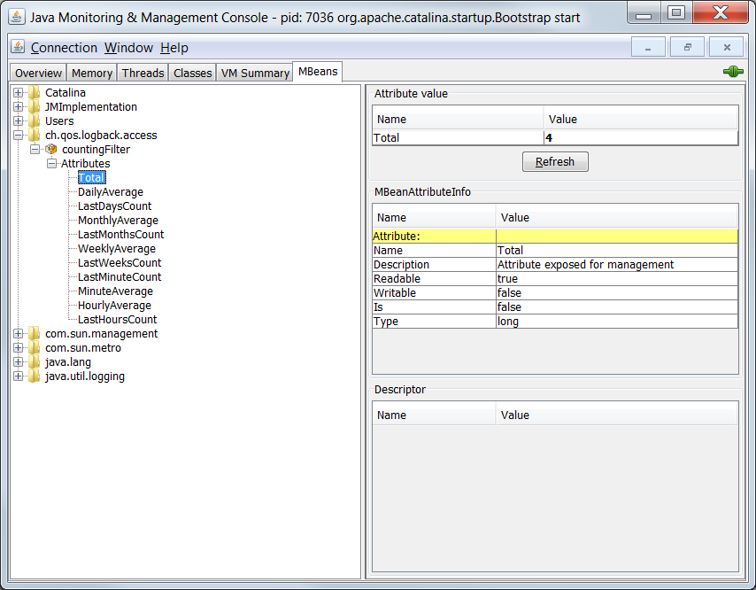

在之前的章节中介绍的 方法打印以及基本选择规则 是 logback-classic 的核心。在这章中，将介绍其它的过滤方法。
logback 过滤器基于三元逻辑，允许它们组装或者链接在一起组成一个任意复杂的过滤策略。它们在很大程度上受到 Linux iptables 的启发。
在 logback-classic 中
在 logback-classic 中，有两种类型的过滤器，regular 过滤器以及 turbo 过滤器。
Regular 过滤器
reqular 过滤器继承自 Filter 这个抽象类。本质上它由一个单一的 decide() 方法组成，接收一个 ILoggingEvent 实例作为参数。
过滤器通过一个有序列表进行管理，并且基于三元逻辑。每个过滤器的 decide(ILoggingEvent event) 被依次调用。这个方法返回 FilterReply 枚举值中的一个， DENY, NEUTRAL 或者 ACCEPT。如果 decide() 方法返回 DENY，那么日志事件会被丢弃掉，并且不会考虑后续的过滤器。如果返回的值是 NEUTRAL，那么才会考虑后续的过滤器。如果没有其它的过滤器了，那么日志事件会被正常处理。如果返回值是 ACCEPT，那么会跳过剩下的过滤器而直接被处理。
在 logback-classic 中，过滤器可以被直接添加到 Appender 实例上。通过将一个或者多个过滤器添加到 appender 上，你可以通过任意标准来过滤日志事件。例如，日志消息的内容，MDC 的内容，时间，或者日志事件的其它部分。
实现你自己的过滤器
创建一个自己的过滤器非常的简单。只需要继承 Filter 并且实现 decide() 方法就可以了。
如下所示的 SampleFilter 就是一个简单的例子。如果日志事件包含字符 “sample”， decide 方法返回 ACCEPT。对于其他的日志事件，则返回 NEUTRAL。
Example: Basic custom filter
1 | package chapters.filters; |
下面是关于将 SampleFilter 添加到 ConsoleAppender 上的配置示例：
Example: SampleFilterConfig.xml
1 | <configuration> |
在 logback 配置框架 Joran 的帮助下，为过滤器指定属性或者子组件也变得更加的简单。在过滤器类中添加相应的 set 方法，通过 <filter> 元素嵌套一个以属性命名的 xml 元素中指定属性的值。
通常情况下，过滤器的逻辑由两个正交的部分组成，match/mismatch 的检验以及基于 match/mismatch 的返回值。例如，对于给定的检验，消息等于 “foobar”，一个过滤器在 match 的情况下返回 ACCEPT，在 mismatch 的情况下返回 NEUTRAL。另一个过滤可能在 match 的情况下返回 NEUTRAL，在 mismatch 的情况下返回 DENY。
注意这种正交，logback 附带了一个 AbstractMatcherFilter 类，提供了一个有用的骨架用来指定在 match 与 mismatch 情况下的返回值，这两个属性名分别叫做 OnMatch 与 OnMismatch。logback 中大部分的 regular 过滤器都源于 AbstractMatcherFilter。
LevelFilter
LevelFilter 基于级别来过滤日志事件。如果事件的级别与配置的级别相等，过滤器会根据配置的 onMatch 与 onMismatch 属性，接受或者拒绝事件。如下是一个简单的示例：
Example: levelFilterConfig.xml
1 | <configuration> |
ThresholdFilter
ThresholdFilter 基于给定的临界值来过滤事件。如果事件的级别等于或高于给定的临界值，当调用 decide() 时，ThresholdFilter 将会返回 NEUTRAL。但是事件的级别低于临界值将会被拒绝。下面是一个简单的例子：
Example: thresholdFilterConfig.xml
1 | <configuration> |
EvaluatorFilter
EvaluatorFilter 是一个通用的过滤器，它封装了一个 EventEvaluator。顾名思义，EventEvaluator 根据给定的标准来评估给定的事件是否符合标准。在 match 和 mismatch 的情况下，EvaluatorFilter 将会返回 onMatch 或 onMismatch 指定的值。
注意 EventEvaluator 是一个抽象类。你可以通过继承 EventEvaluator 来实现自己事件评估逻辑。
GEventEvaluator
GEventEvaluator 是 EventEvaluator 具体的实现，它采用 Groovy 表达式作为评估的标准。我们把 Groovy 表达式称为 “Groovy 评估表达式”。Groogy 评估表达式是目前为止进行事件过滤最灵活的方式。GEventEvaluator 需要 Groovy 运行环境。参考 相关部分 在类路径下添加 Groovy 运行环境。
评估表达式在解析配置文件期间被动态编译。作为用户，不需要考虑实际的情况。但是，你需要确保你的 Groovy 表达式是有效的。
评估表达式作用于当前的日志事件。logback 会自动将 ILoggingEvent 类型的日志事件作为变量插入，引用到 ‘event’ 或者它的简称 ‘e’。TRACE, DEBUG, INFO, WARN 以及 ERROR 也能够被导入到表达式的范围中。所以，“event.level == DEBUG” 与 “e.level == DEBUG” 是等价的。只有当当前日志事件的级别为 DEBUG 时，Groovy 表达式才会返回 true。对于其它的级别比较操作，应该通过 toInt() 操作将 level 字段转变为整型。
下面是一个比较复杂的例子：
1 | <configuration> |
上面的过滤器会让级别在 WARN 及以上的日志事件在控制台显示，除非是由于来自 Google，MSN，Yahoo 的网络爬虫导致的错误。它通过检查与事件相关的 MDC 包含 “req.userAgent” 的值是否匹配 /Googlebot|msbbot|Yahoo/ 正则表达式。因为 MDC 的映射可能为 null，所以我们使用 Groovy 的 安全解引用操作符，也就是 ?. 操作符。这个相等的逻辑在 Java 中的表达式更长。
如果你好奇 user agent 标识符作为值怎样被插入到 key 为 "req.userAgent " 的 MDC 中，那么就会涉及到 logback 为了这个目的附带了一个名为 MDCInsertingServletFilter 的 servlet 过滤器。它将会在接下来的章节中描述。
JaninoEventEvaluator
logback-classic 附带的另外一个 EventEvaluator 的具体实现名为 JaninoEventEvaluator，它接受任意返回布尔值的 Java 代码块作为评判标准。我们把这种 Java 布尔表达式称为 “评估表达式”。评估表达式在事件过滤中可以更加的灵活。JaninoEventEvaluator 需要 Janino 类库。请参见 相关章节 进行设置。跟 JaninoEventEvaluator 相比，GEventEvaluator 使用 Groovy 语言，使用起来非常方便。但是 JaninoEventEvaluator 将使用运行更快的等效表达式。
评估表达式在解析配置文件期间被动态编译。作为用户，不需要考虑实际的情况。但是，你需要确保你的 Java 表达式是有效的，保证它的评估结果为 true 或 false。
评估表达式对当前日志事件进行评估。logback-classic 自动导出日志事件的各种字段作为变量，为了可以从评估表达式访问。这些导出的变量是大小写敏感的，如下表所示：
| 名字 | 类型 | 描述 |
|---|---|---|
| event | LoggingEvent |
日志请求的原始日志事件。下面所有的变量都来自这个日志事件。例如，event.getMessage() 返回的字符串跟下面的 message 变量返回的字符串一样。 |
| message | String |
日志请求的原始信息。例如，对于 logger I，当你写的是 I.info(“Hello {}”, name); 时，name 的值被指定为 “Alice”，消息就为 “Hello {}”。 |
| formattedMessage | String |
日志请求中格式化后的消息。例如，对于 logger I，当你写的是 I.info(“Hello {}”, name); 时，name 的值被指定为 “Alice”，格式化后的消息就为 “Hello Alice”。 |
| logger | String |
logger 的名字 |
| loggerContext | LoggerContextVO | 日志事件属于 logger 上下文中哪个受限的视图 (值对象) |
| level | int |
事件级别对应的 int 值。用来创建包含级别的表达式。默认值是 DEBUG，INFO，WARN 以及 ERROR 也是有效的。所以 level > INFO 是有效的表达式。 |
| timeStamp | long |
日志事件创建的时间 |
| marker | Marker |
与日志请求相关的 Marker 对象。注意，marker 可能会为 null，因此你需要对这种情况进行检查，进而避免 NullPointerException。 |
| mdc | Map |
创建日志事件时包含的所有的 MDC 值的一个映射。可以通过 mdc.get(“myKey”) 来获取 MDC 中对应的值。在 0.9.30 版本的 logback-classic，mdc 变量永远不会为 null。java.util.Map 类型是非参数化的，因为 Janino 不支持泛型。因此，mdc.get() 返回值的类型是 Object 而不是 String。但是可以将返回值强制转换为 String。例如， ((String) mdc.get("k")).contains("val")。 |
| throwable | java.lang.Throwable | 如果日志事件没有相关的异常，那么变量 “throwable” 的值为 null。“throwable” 不可以被序列化。所以在远程服务器上，这个值永远为 null。想要使用与位置无关的表达式，可以使用下面的 throwableProxy。 |
| throwableProxy | IThrowableProxy | 日志事件的异常代理。如果日志事件没有相关的异常，那么 throwableProxy 的值为 null。与 “throwable” 相反，即使在远程服务器上序列化之后，日志事件相关的异常也不会为 null。 |
下面是具体的例子。
Example: basicEventEvaluator.xml
1 | <configuration> |
上面的配置将 EvaluatorFilter 添加到 ConsoleAppender。一个类型为 JaninoEventEvaluator 的 evaluator 之后被注入到 EvaluatorFilter 中。<evaluator 在缺少 class 属性的情况下，Joran 会指定 evaluator 的默认类型为 JaninoEventEvaluator。这是 少数几个 需要 Joran 默认指定类型的组件。
expression 元素对应刚才讨论过的评估表达式。表达式 return message.contains("billing"); 返回一个布尔值。message 变量会被 JaninoEventEvaluator 自动导出。
由于 OnMismatch 属性的值为 NEUTRAL 以及 OnMatch 属性的值为 DENY，所以评估过滤器会丢掉消息包含 “billing” 的日志事件。
FilterEvents 发出十条日志请求，编号为 0 到 9。首先在没有过滤器的情况下运行 FilterEvents：
1 | java chapters.filters.FilterEvents src/main/java/chapters/filters/basicConfiguration.xml |
输出如下：
1 | 0 [main] INFO chapters.filters.FilterEvents - logging statement 0 |
假设我们想要丢弃 “billing statement”。basicEventEvaluator.xml 中配置的过滤器恰好可以满足这个需求。
通过 basicEventEvaluator.xml 运行：
1 | java chapters.filters.FilterEvents src/main/java/chapters/filters/basicEventEvaluator.xml |
将会得到：
1 | 0 [main] INFO chapters.filters.FilterEvents - logging statement 0 |
评估表达式可以是一个 Java 代码块。如下，便是一个有效的表达式。
1 | <evaluator> |
Matchers
虽然可以通过调用 String 类的 matches() 方法来进行模式匹配，但是每次调用 filter 都需要耗费时间重新编译一个新的 Pattern 对象。为了消除这种影响，你可以预先定义一个或者多个 Matcher 对象。一旦定义了一个 matcher，就可以在评估表达式中重复使用了。
通过一个简单的例子来说明这一点：
Example: evaluatorWithMatcher.xml
1 | <configuration debug="true"> |
通过 evaluatorWithMatcher.xml 运行：
1 | java chapters.filters.FilterEvents src/main/java/chapters/filters/evaluatorWithMatcher.xml |
将会得到：
1 | 260 [main] INFO chapters.filters.FilterEvents - logging statement 0 |
如果你想定义其它的 matcher，可以继续增加 <matcher> 元素。
TurboFilters
TurboFilter 对象都继承 TurboFilter 抽象类。对于 regular 过滤器，它们使用三元逻辑来返回对日志事件的评估。
总之，它们跟之前提到的过滤工作原理差不多。主要的不同点在于 Filter 与 TurboFilter 对象。
TurboFilter 对象被绑定刚在 logger 上下文中。因此，在使用给定的 appender 以及每次发出的日志请求都会调用 TurboFilter 对象。因此，turbo 过滤器可以为日志事件提供高性能的过滤，即使是在事件被创建之前。
实现自己的 TurboFilter
想要创建自己的 TurboFilter 组件，只需要继承 TurboFilter 这个抽象类就可以了。跟之前的一样，想要实现定制的过滤器对象，开发自定义的 TurboFilter，只需要实现 decide() 方法就可以了。下一个例子，我们会创建一个稍微复杂一点的过滤器：
Example: SampleTurboFilter.java
1 | package chapters.filters; |
TurboFilter 接受一个指定的 marker，如果 marker 没有被找到，那么过滤器会将日志事件传递给过滤器链中的下一个过滤器。
为了更加灵活，允许在配置文件指定 marker 用于检测，因此可以使用 get 和 set 方法。我们还可以通过实现 start() 方法来检查在配置过程中，指定的选项是否满足。
下面的配置充分利用了我们新创建的 TurboFilter。
Example: sampleTurboFilterConfig.xml
1 | <configuration> |
loback-classic 附带了几个 TurboFilter 类可以开箱即用。MDCFilter 用来检查给定的值在 MDC 中是否存在。DynamicThresholdFilter 根据 MDC key/level 相关的阀值来进行过滤。MarkerFilter 用来检查日志请求中指定的 marker 是否存在。
下面的例子使用了 MDCFilter 与 MarkerFilter。
Example: urboFilters.xml
1 | <configuration> |
执行以下命令：
1 | java chapters.filters.FilterEvents src/main/java/chapters/filters/turboFilters.xml |
在之前我们看到 FilterEvents 输出了 10 条日志请求，编号 0 到 9。除了第 3 条与第 6 条，所有的请求都是 INFO 级别的，与 root logger 的级别一致。第 3 条日志请求是 DEBUG 级别的，在有效级别之下。但是，因为 MDC 的 key “username” 在第三条请求之前设置为 “sebastien”，之后才被移除，所以 MDCFilter 接受这条请求 (仅仅只有这条请求)。第 6 条请求的级别为 ERROR，被标记为 “billing”。因此，它会被 MarkerFilter (配置文件中第二个 turbo 过滤器) 拒绝。
因此，FilterEvents 通过 turboFilters.xml 输出的信息如下：
1 | 2018-08-20 23:19:28,807 [main] INFO chapters.filters.FilterEvents - logging statement 0 |
可以看到，第 3 条日志请求，本来不应该被展示出来，因为我们仅仅只关注 INFO 级别的请求，但是它匹配了第一个 TurboFilter，所以被接受了。
第 6 条日志请求，它是 ERROR 级别的日志，应该被显示。但是因为满足第二个 TurboFilter，它的 OnMatch 设置为 DENY，所以第 6 条请求不会被展示。
DuplicateMessageFilter
DuplicateMessageFilter 可以拿出来单独阐述。这个过滤器检测重复的消息，在重复了一定次数之后，丢弃掉重复的消息。
这个过滤器使用字符串是否相等来检查是否重复。不会检查非常相似，仅仅只差几个字符的字符串。例如：
1 | logger.debug("Hello "+name0); |
如果 name0 与 name1 有不同的值，那么两个 “Hello” 消息会被认为不相关。根据用户的需要，将会可能会支持相似字符串的检查，限制相似字符串的重复，而不是完全相同的。
但是在参数化日志请求中，只考虑原始消息。例如，下面两条日志请求，原始消息为 “Hello {}”，它们被认为是想相等的，因此被认为是重复出现。
1 | logger.debug("Hello {}.", name0); |
可以通过 AllowedRepetitions 属性来指定允许重复的次数。如果这个属性被设置为 1，那么第二条以及后续的日志消息都会被丢弃掉。类似的，如果被设置为 2，那么第三条及后续的日志消息会被丢弃掉。这个值默认设置为 5。
为了检测重复，过滤器需要在内部的缓存中保留对旧消息的引用。通过 CacheSize 来控制缓存的大小。默认情况下，这个值为 100。
Example: duplicateMessage.xml
1 | <configuration> |
FilterEvents 通过 duplicateMessage.xml 配置后输出如下：
1 | 2018-08-21 09:09:22,036 [main] INFO chapters.filters.FilterEvents - logging statement 0 |
“logging statement 0” 是消息 "logging statement {}"j 第一次出现。“logging statement 1” 是第一次重复。“logging statement 2” 是第二次重复。有趣的是，虽然 “logging statement 3” 的级别为 DEBUG，为第三次重复。但是根据 方法打印以及基本选择规则，它被丢弃了。这也说明了 turbo 过滤器会在其它过滤器之前调用，包括在基本选择规则之前。因此 DuplicateMessageFilter 认为 “logging statement 3” 是第三次重复，而不会管它是否会在之后过滤器链的处理中被丢弃掉。“logging statement 4” 是第四次重复。“logging statement 5” 是第五次。因此默认的重复次数是 5，所以之后的语句都会被丢弃掉。(注：指的是 “logging statement {}”)。
在 logback-access 中
logback-access 提供了 logback-classic 提供的大部分功能。特别地，Filter 对象同样是有效的，并且以同样的方式工作，就像 logback-classic 的副本一样，但是有一个显著的区别。logback-access 过滤器对 AccessEvent 实例起作用，而不是 LoggingEvent 实例。目前，logback-access 只提供了以下有限的过滤器。如果你想建议添加额外的过滤器，请通过 logback-dev 邮件列表进行联系。
CountingFilter
在 CountingFilter 类的帮助下，logback-access 可以提供对服务器访问数据的统计。在初始化的死后，CountingFilter 将自己作为一个 MBean 注册到平台的 JMX 服务上。你可以通过轮询 MBean 来进行数据统计。例如，平均每分钟，每小时，每天，每周，或者每月。其它的统计，例如周计，天计，小时计，月计或者总计也是可以获取的。
下面的 logback-access.xml 配置文件声明了一个 CountingFilter。
1 | <configuration> |
你可以通过 jconsole 查看有 CountingFilte 在你平台的 JMX 服务上维护的各种统计信息。

EvaluatorFilter
EvaluatorFilter 是一个通用的过滤器，维护了一个 EventEvaluator。顾名思义，EventEvaluator 根据给定的标准判断给定的日志事件是否满足，EvaluatorFilter 将会根据 match 与 mismatch 的情况，返回由 onMatch 或 onMismatch 属性指定的值。EvaluatorFilter 在之前的 logback-classic 中已经讨论过了（见上面）。现在大部分都是对之前讨论的重复。
注意 EventEvaluator 是一个抽象类。你可以通过继承 EventEvaluator 来实现你自己的评估逻辑。logback-access 附带了一个名为 JaninoEventEvaluator 的具体实现。它可以接收任意的 Java 表达式作为评估标准。我们把这种 Java 代码块称为 “评估表达式”。评估表达式在事件过滤中有较大的灵活性。JaninoEventEvaluator 需要 Janino 类库。请查看 相应的文档 进行设置。
评估表达式在解析配置文件的过程中被动态编译。作为用户，你不需要知道实际的细节。但是，你需要保证 Java 表达式返回一个布尔值，能够计算为 true 或者 false。
评估表达式可以对当前访问的事件进行评估。logback-access 会自动导出当前 AccessEvent 实例到变量 event 下。你可以通过 event 变量读取 HTTP 请求中以及 HTTP 响应中的各种数据。查看 AccessEvent 类的源码 来查看具体的列表。
下个配置文件基于 HTTP 响应码 404 (Not Found) 来进行过滤。每一个 404 的请求都会在控制台打印出来。
Example: accessEventEvaluator.xml
1 | <configuration> |
下面的例子，打印 404 错误，但是排除了请求 CSS 文件的请求。
Example: accessEventEvaluator2.xml
1 | <configuration> |
If you like this blog or find it useful for you, you are welcome to comment on it. You are also welcome to share this blog, so that more people can participate in it. If the images used in the blog infringe your copyright, please contact the author to delete them. Thank you !